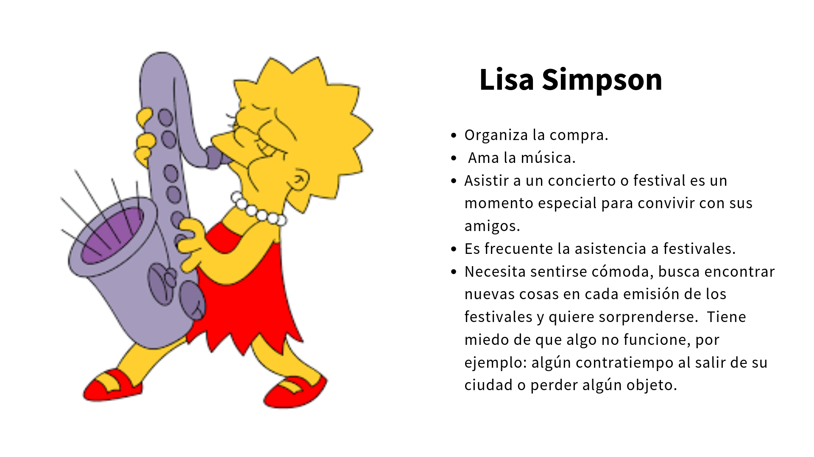

DETALLES
Entender los distintos problemas relacionados a la venta de boletos para espectáculos, tanto del lado de las personas que utilizan el servicio como del lado del negocio.
2 semanas | Colaborativo con Talía GyG ,
Adriana Acosta y
Nohemí Moreno
ENTREGABLES
- Research
- Benchmark
- Test de usabilidad
- Empathy Map
- Arquetipos
- User Persona
- Entrevistas a profundidad
- Customer Journey Map
- Value Proposition
- Prototipo de alta fidelidad
SOFTWARE
- Adobe Xd
- Marvel App
- MIRO
- Google Docs
DESCRIPCIÓN
Ticketmaster opera en México desde principios de los 90,
mediante un acuerdo para el uso y expansión de la marca por parte de CIE
con su contraparte Ticketmaster USA. En la última década, la expansión de
las conexiones a internet, los teléfonos móviles, las redes sociales y los
emprendimientos digitales han creado nuevas formas de competir en este
mercado y ahora tenemos empresas como Eventbrite, Meetup.com, Facebook o
Boletia compitiendo en este sector. Ticketmaster no se quiere quedar a atrás
y está buscando modernizar su plataforma.
OBJETIVOS
RESEARCH
Al encontrarnos con que la plataforma de Ticketmaster tenía severos pains de flujo de compra como de diseño visual de la misma. Para develar las emociones reales de nuestros usuarios y con el objetivo de profundizar en entender la lógica cognitiva y de comportamientos de los encuestados, entrevistamos a cinco personas donde les pedimos información fundamental que pudiesen llegar a encontrar al usar la plataforma actual de Ticketmaster. Se les pidió que compraran un boleto para Corona Capital 2019 y utilizamos la herramienta “Think Out Loud” donde ellos compartían en voz alta lo que iban sintiendo o pensando de lo que estaba aconteciendo. Terminando las entrevistas recopilamos, analizamos la información obtenida. Dicho test de usabilidad fue un “test de guerrilla”, donde se trata de pedirle al usuario que realice una tarea y al menos con cinco usuarios podemos detectar el 85% de errores de usabilidad. El camino que continuaba era encontrar maneras de reducir ese 85% de errores para centrarnos en encontrar alguno de gran impacto para el mayor número de personas usuarias.
USER PERSONA
Un ingrediente especial para definir a las personas de diseño fue la pasión
por asistir a los eventos, especialmente a los conciertos o festivales.
Es un factor determinante en las costumbres de compra, pues los usuarios
se aprenden los procesos de la plataforma web y han generado “trucos”
para hacerlo de manera eficiente. Experimentamos con las combinaciones
de los ejes para obtener arquetipos.
Decidimos tomar como referencia las características:
Eje Y: Experiencia al elegir método de entrega.
Eje X: Planeación de compra de boletos.
Las particularidades que definen a cada sector de la matriz fueron útiles para
pensar en las necesidades de acuerdo a cada perfil. Nos inclinamos por
reconocer la perspectiva de acuerdo al modo en cómo se involucran en la compra
de los boletos.


DEFINICIÓN DEL PROBLEMA
A través de la investigación y de las entrevistas con usuarios, llegamos a la conclusión de que un problema que se repetía entre los usuarios es la LA VULNERABILIDAD QUE EXISTE ALREDEDOR DEL BOLETO FÍSICO. Haciendo el Journey Map de un usuario en donde experimenta la tensión de cuidar su boleto todo el tiempo, de que no lo pierda u olvide; fue lo que nos inspiro para tratar de brindarle una solución y que el usuario no tenga que preocuparse por esto para que pueda disfrutar del evento al que tiene planeado ir, de principio a fin.
RETO DE DISEÑO
¿Cómo podríamos eliminar la tensión que existe alrededor del boleto físico?
IDEACIÓN
Surgieron dos grandes ideas:
- Reducir la compra del evento a solo tres pasos en el sitio responsive web de Ticketmaster.
- Generar un boleto digital personalizado que se guarda en la aplicación móvil Wallet Ticketmaster, de forma segura e intransferible.
- Brindarle al usuario un "Kit de supervivencia" con información valiosa y útil.
Y un WOW:
ACCIONES A REALIZAR
- Eliminación del boleto físico por e-ticket
- Mejora del flujo de compra en 3 pasos
- Experiencia de usuario "TM te acompaña"
- Seguridad antireventa
PROTOTIPO
Realizamos el flujo de compra en tan solo tres pasos en la versión responsive del sitio web de Ticketmaster. El UI lo realizaron Talía y Adriana Acosta. En este proyecto me encargue de realizar el UI de la aplicación Wallet Ticketmaster. El kit de supervivencia fue diseñado y desarrollado por Nohemí Moreno. También realizamos un vídeo , en donde se puede ver como funciona el flujo de compra, cuando recibe el correo electrónico de confirmación en el cual incluye el "Kit de supervivencia" en PDF para que lo pueda descargar y finalmente cuando Karen desacarga la aplicación Wallet Ticketmaster en donde puede navegar y ver distintos eventos, consultar el "Kit de supervivencia" y almacenar su boleto digital del evento que compró de forma segura, lo puede consultar incluso offline. Su boleto estará activo en el tiempo establecido y se generará su código QR que le dará acceso al evento.
Leer caso completo aquí